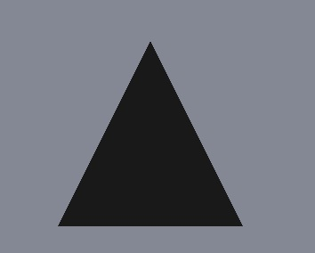

QQuick3DGeometry Class
Base class for defining custom geometry. More...
| Header: | #include <QQuick3DGeometry> |
| Instantiated By: | Geometry |
| Inherits: | QQuick3DObject |
Public Functions
| void | addAttribute(QQuick3DGeometry::Attribute::Semantic semantic, int offset, QQuick3DGeometry::Attribute::ComponentType componentType) |
| void | addAttribute(const QQuick3DGeometry::Attribute &attribute) |
| void | addSubset(int offset, int count, const QVector3D &boundsMin, const QVector3D &boundsMax, const QString &name = {}) |
(since 6.6) void | addTargetAttribute(quint32 targetId, QQuick3DGeometry::Attribute::Semantic semantic, int offset, int stride = 0) |
(since 6.6) void | addTargetAttribute(const QQuick3DGeometry::TargetAttribute &attribute) |
| QQuick3DGeometry::Attribute | attribute(int index) const |
| int | attributeCount() const |
| QVector3D | boundsMax() const |
| QVector3D | boundsMin() const |
| void | clear() |
| QByteArray | indexData() const |
| QQuick3DGeometry::PrimitiveType | primitiveType() const |
| void | setBounds(const QVector3D &min, const QVector3D &max) |
| void | setIndexData(const QByteArray &data) |
| void | setIndexData(int offset, const QByteArray &data) |
| void | setPrimitiveType(QQuick3DGeometry::PrimitiveType type) |
| void | setStride(int stride) |
(since 6.6) void | setTargetData(const QByteArray &data) |
(since 6.6) void | setTargetData(int offset, const QByteArray &data) |
| void | setVertexData(const QByteArray &data) |
| void | setVertexData(int offset, const QByteArray &data) |
| int | stride() const |
| QVector3D | subsetBoundsMax(int subset) const |
| QVector3D | subsetBoundsMin(int subset) const |
| int | subsetCount() const |
| int | subsetCount(int subset) const |
| QString | subsetName(int subset) const |
| int | subsetOffset(int subset) const |
(since 6.6) QQuick3DGeometry::TargetAttribute | targetAttribute(int index) const |
(since 6.6) int | targetAttributeCount() const |
(since 6.6) QByteArray | targetData() const |
| QByteArray | vertexData() const |
Detailed Description
The QQuick3DGeometry can be used to specify custom geometry for a Model in the Qt Quick 3D scene.
While not strictly required, the typical usage is to inherit from this class. The subclass is then exposed to QML by registering it to the type system. The geometry property of a Model can then be set to reference an instance of the registered type.
The high-level structure of such a class is typically similar to the following:
class CustomGeometry : public QQuick3DGeometry { public: CustomGeometry() { rebuildGeometry(); } void setSomething() { // Change relevant internal data. // ... // Then rebuild the vertex and index data and pass it to QQuick3DGeometry. rebuildGeometry(); // Finally, trigger an update. This is relevant in case nothing else // is changing in the scene; this way we make sure a new frame will // be rendered. update(); } private: void rebuildGeometry() { QByteArray vertices; QByteArray indices; ... setPrimitiveType(Lines); setVertexBuffer(vertices); setIndexBuffer(indices); setStride(3 * sizeof(float)); // e.g. when having 3 components per vertex setBounds(...); // minimum and maximum extents, for picking addAttribute(PositionSemantic, 0, F32Type); ... } };
This class can then be registered as a QML type and used with Model.
In Qt 5 type registration happened with qmlRegisterType:
qmlRegisterType<CustomGeometry>("Example", 1, 0, "CustomGeometry");
In Qt 6 the default approach is to use automatic registration with the help of the build system. Instead of calling qmlRegisterType, the .pro file can now contain:
CONFIG += qmltypes QML_IMPORT_NAME = Example QML_IMPORT_MAJOR_VERSION = 1
With CMake, automatic registration is the default behavior, so no special settings are needed beyond basic QML module setup:
qt_add_qml_module(application
URI Example
VERSION 1.0
)
The class implementation should add QML_NAMED_ELEMENT:
class CustomGeometry : public QQuick3DGeometry { Q_OBJECT QML_NAMED_ELEMENT(CustomGeometry) ... };
The QML code can then use the custom type:
import Example 1.0
Model {
id: customModel
geometry: CustomGeometry {
}
}
At minimum, a custom geometry should have the following specified:
- vertex data,
- vertex stride,
- primitive type,
- an attribute with PositionSemantic.
These are sufficient to render the mesh. For indexed drawing, the index buffer data and an attribute with IndexSemantic needs to be specified as well. In order to support picking (input), the class must specify the bounding volume using setBounds(). For proper lighting, an attribute with NormalSemantic is needed. When the material uses texturing, at least one set of UV coordinates must be provided and described in an TexCoord0Semantic or TexCoord1Semantic attribute. Some materials may require tangents and binormals as well.
As a concrete, minimal example, the following class would provide geometry for a single triangle:
class ExampleGeometry : public QQuick3DGeometry { Q_OBJECT QML_NAMED_ELEMENT(ExampleGeometry) public: ExampleGeometry(); private: void updateData(); }; ExampleGeometry::ExampleGeometry() { updateData(); } void ExampleGeometry::updateData() { QByteArray v; v.resize(3 * 3 * sizeof(float)); float *p = reinterpret_cast<float *>(v.data()); // a triangle, front face = counter-clockwise *p++ = -1.0f; *p++ = -1.0f; *p++ = 0.0f; *p++ = 1.0f; *p++ = -1.0f; *p++ = 0.0f; *p++ = 0.0f; *p++ = 1.0f; *p++ = 0.0f; setVertexData(v); setStride(3 * sizeof(float)); setPrimitiveType(QQuick3DGeometry::PrimitiveType::Triangles); addAttribute(QQuick3DGeometry::Attribute::PositionSemantic, 0, QQuick3DGeometry::Attribute::F32Type); }
Depending on the lighting in the scene, the result of referencing this geometry from a Model:

Note: Vertex data is expected to follow OpenGL conventions. This means the data must be provided with the assumption that the Y axis is pointing up in the normalized device coordinate system, and that front faces have a counter clockwise winding.
Member Function Documentation
void QQuick3DGeometry::addAttribute(QQuick3DGeometry::Attribute::Semantic semantic, int offset, QQuick3DGeometry::Attribute::ComponentType componentType)
Adds vertex attribute description. Each attribute has a semantic, which specifies the usage of the attribute and the number of components it has, an offset from the beginning to the vertex to the attribute location inside a vertex and a componentType specifying the datatype and size of the attribute.
The semantic can be one of the following:
| Constant | Description |
|---|---|
PositionSemantic | The attribute is a position. 3 components: x, y, and z |
NormalSemantic | The attribute is a normal vector. 3 components: x, y, and z |
TexCoord0Semantic | The attribute is a texture coordinate. 2 components: u and v |
TexCoord1Semantic | The attribute is a texture coordinate. 2 components: u and v |
TangentSemantic | The attribute is a tangent vector. 3 components: x, y, and z |
BinormalSemantic | The attribute is a binormal vector. 3 components: x, y, and z |
JointSemantic | The attribute is a joint index vector for skinning. 4 components: joint index 1-4 |
WeightSemantic | The attribute is a weight vector for skinning. 4 components: joint weight 1-4 |
ColorSemantic | The attribute is a vertex color vector. 4 components: r, g, b, and a |
TargetPositionSemantic | The attribute is a position for the first morph target. 3 components: x, y, and z |
TargetNormalSemantic | The attribute is a normal vector for the first morph target. 3 components: x, y, and z |
TargetTangentSemantic | The attribute is a tangent vector for the first morph target. 3 components: x, y, and z |
TargetBinormalSemantic | The attribute is a binormal vector for the first morph target. 3 components: x, y, and z |
In addition, semantic can be IndexSemantic. In this case the attribute does not represent an entry in the vertex buffer, but rather describes the index data in the index buffer. Since there is always just one index per vertex, offset makes no sense for the index buffer, and should be left at zero.
The component type can be one of the following:
| Constant | Description |
|---|---|
U16Type | The index component type is unsigned 16-bit integer. Only supported for IndexSemantic. |
U32Type | The attribute (or index component) is an unsigned 32-bit integer. |
I32Type | The attribute is a signed 32-bit integer. Be aware that old OpenGL versions (such as, 2.1 or OpenGL ES 2.0) may not support this data type. |
F32Type | The attribute is a single-precision float. |
Note: The joint index data is typically I32Type. F32Type is also supported in order to enable functioning with APIs, such as OpenGL ES 2.0, that do not support integer vertex input attributes.
Note: For index data (IndexSemantic) only U16Type and U32Type are sensible and supported.
Note: TargetXXXSemantics will be deprecated. addTargetAttribute can be used for the morph targets. Now these semantics are just supported for backward compatibility. If they are mixed-used with addTargetAttribute and setTargetData, the result cannot be quaranteed.
void QQuick3DGeometry::addAttribute(const QQuick3DGeometry::Attribute &attribute)
This is an overloaded function.
Adds vertex attribute description. Each attribute has a semantic, which specifies the usage of the attribute and the number of components it has, an offset from the beginning to the vertex to the attribute location inside a vertex and a componentType specifying the datatype and size of the attribute.
void QQuick3DGeometry::addSubset(int offset, int count, const QVector3D &boundsMin, const QVector3D &boundsMax, const QString &name = {})
Adds new subset to the geometry. Subsets allow rendering parts of the geometry with different materials. The materials are specified in the model.
If the geometry has index buffer, then the offset and count are the primitive offset and count of indices in the subset. If the geometry has only vertex buffer, the offset is the vertex offset and count is the number of vertices in the subset.
The bounds boundsMin and boundsMax should enclose the subset just like geometry bounds. Also the subset can have a name.
[since 6.6] void QQuick3DGeometry::addTargetAttribute(quint32 targetId, QQuick3DGeometry::Attribute::Semantic semantic, int offset, int stride = 0)
Adds morph target attribute description. Each attribute has a targetId which the attribute belongs to, a semantic, which specifies the usage of the attribute and the number of components it has, an offset from the beginning to the vertex to the attribute location inside a vertex, and a stride which is a byte size between the elements.
Note: The targetId should be increased from 0 without skipping any number and all the targets should have the same attributes.
Note: The semantic is the same as the vertex attribute but IndexSemantic, JointSementic and WeightSemantic are not allowed for target attributes.
Note: The componentTypes of all the target attributes must be F32Type.
Note: If the stride is not given or less than or equal to zero, the attribute is considered to be tightly packed.
This function was introduced in Qt 6.6.
See also addAttribute.
[since 6.6] void QQuick3DGeometry::addTargetAttribute(const QQuick3DGeometry::TargetAttribute &attribute)
This is an overloaded function.
Adds morph target attribute description. Each attribute has a targetId which the attribute belongs to, a semantic, which specifies the usage of the attribute and the number of components it has, an offset from the beginning to the vertex to the attribute location inside a vertex, and a stride which is a byte size between the elements.
This function was introduced in Qt 6.6.
QQuick3DGeometry::Attribute QQuick3DGeometry::attribute(int index) const
Returns attribute definition number index
The attribute definitions are numbered from 0 to attributeCount() - 1
int QQuick3DGeometry::attributeCount() const
Returns the number of attributes defined for this geometry.
See also attribute.
QVector3D QQuick3DGeometry::boundsMax() const
Returns the maximum coordinate of the bounding volume.
See also setBounds.
QVector3D QQuick3DGeometry::boundsMin() const
Returns the minimum coordinate of the bounding volume.
See also setBounds.
void QQuick3DGeometry::clear()
Resets the geometry to its initial state, clearing previously set vertex and index data as well as attributes.
QByteArray QQuick3DGeometry::indexData() const
Returns the index buffer data.
See also setIndexData().
QQuick3DGeometry::PrimitiveType QQuick3DGeometry::primitiveType() const
Returns the primitive type used when rendering. The default is Triangles.
See also setPrimitiveType.
void QQuick3DGeometry::setBounds(const QVector3D &min, const QVector3D &max)
Sets the bounding volume of the geometry to the cube defined by the points min and max. This is used for picking.
void QQuick3DGeometry::setIndexData(const QByteArray &data)
Sets the index buffer to data. To use indexed drawing, add an attribute with IndexSemantic
See also indexData() and addAttribute.
void QQuick3DGeometry::setIndexData(int offset, const QByteArray &data)
This is an overloaded function.
Updates a subset of the index buffer. offset specifies the offset in bytes, data specifies the size and the data.
This function will not resize the buffer. If offset + data.size() is greater than the current size of the buffer, the overshooting data will be ignored.
Note: The partial update functions for vertex, index and morph target data do not offer any guarantee on how such changes are implemented internally. Depending on the underlying implementation, even partial changes may lead to updating the entire graphics resource.
void QQuick3DGeometry::setPrimitiveType(QQuick3DGeometry::PrimitiveType type)
Sets the primitive type used for rendering to type.
| Constant | Description |
|---|---|
Points | The primitives are points. |
LineStrip | The primitives are lines in a strip. |
Lines | The primitives are lines in a list. |
TriangleStrip | The primitives are triangles in a strip. |
TriangleFan | The primitives are triangles in a fan. Be aware that triangle fans may not be supported at run time, depending on the underlying graphics API. |
Triangles | The primitives are triangles in a list. |
The initial value is Triangles.
Note: Be aware that triangle fans (TriangleFan) may not be supported at run time, depending on the underlying graphics API. For example, with Direct 3D this topology will not be functional at all.
Note: The point size for Points and the line width for Lines and LineStrip are controlled by the material. Be aware however that sizes other than 1 may not be supported at run time, depending on the underlying graphics API.
See also primitiveType().
void QQuick3DGeometry::setStride(int stride)
Sets the stride of the vertex buffer to stride, measured in bytes. This is the distance between two consecutive vertices in the buffer.
For example, a tightly packed, interleaved vertex buffer for a geometry using PositionSemantic, IndexSemantic, and ColorSemantic will have a stride of 28 (Seven floats in total: Three for position, four for color, and none for indexes, which do not go in the vertex buffer.)
Note: QQuick3DGeometry expects, and works only with, vertex data with an interleaved attribute layout.
See also stride() and addAttribute.
[since 6.6] void QQuick3DGeometry::setTargetData(const QByteArray &data)
Sets the morph target buffer data. The buffer should hold all the morph target data.
This function was introduced in Qt 6.6.
See also targetData() and addTargetAttribute.
[since 6.6] void QQuick3DGeometry::setTargetData(int offset, const QByteArray &data)
This is an overloaded function.
Updates a subset of the morph target buffer. offset specifies the offset in bytes, data specifies the size and the data.
This function will not resize the buffer. If offset + data.size() is greater than the current size of the buffer, the overshooting data will be ignored.
Note: The partial update functions for vertex, index and morph target data do not offer any guarantee on how such changes are implemented internally. Depending on the underlying implementation, even partial changes may lead to updating the entire graphics resource.
This function was introduced in Qt 6.6.
void QQuick3DGeometry::setVertexData(const QByteArray &data)
Sets the vertex buffer data. The buffer should hold all the vertex data packed in the array, as described by the attribute definitions. Note that this does not include attributes with IndexSemantic, which belong in the index buffer.
See also vertexData(), addAttribute, setStride, and setIndexData.
void QQuick3DGeometry::setVertexData(int offset, const QByteArray &data)
This is an overloaded function.
Updates a subset of the vertex buffer. offset specifies the offset in bytes, data specifies the size and the data.
This function will not resize the buffer. If offset + data.size() is greater than the current size of the buffer, the overshooting data will be ignored.
Note: The partial update functions for vertex, index and morph target data do not offer any guarantee on how such changes are implemented internally. depending on the underlying implementation, even partial changes may lead to updating the entire graphics resource.
int QQuick3DGeometry::stride() const
Returns the byte stride of the vertex buffer.
See also setStride.
QVector3D QQuick3DGeometry::subsetBoundsMax(int subset) const
Returns the number of maximum bounds of a subset.
See also subsetBoundsMin.
QVector3D QQuick3DGeometry::subsetBoundsMin(int subset) const
Returns the number of minimum bounds of a subset.
See also subsetBoundsMax.
int QQuick3DGeometry::subsetCount() const
Returns the number of subsets.
int QQuick3DGeometry::subsetCount(int subset) const
Returns the subset primitive count.
See also subsetOffset.
QString QQuick3DGeometry::subsetName(int subset) const
Returns the subset name.
int QQuick3DGeometry::subsetOffset(int subset) const
Returns the subset offset to the vertex or index buffer.
See also subsetCount.
[since 6.6] QQuick3DGeometry::TargetAttribute QQuick3DGeometry::targetAttribute(int index) const
Returns morph target attribute definition number index
The attribute definitions are numbered from 0 to attributeCount() - 1
This function was introduced in Qt 6.6.
[since 6.6] int QQuick3DGeometry::targetAttributeCount() const
Returns the number of morph target attributes defined for this geometry.
This function was introduced in Qt 6.6.
See also targetAttribute.
[since 6.6] QByteArray QQuick3DGeometry::targetData() const
Returns the target buffer data set by setTargetData.
This function was introduced in Qt 6.6.
See also setTargetData().
QByteArray QQuick3DGeometry::vertexData() const
Returns the vertex buffer data set by setVertexData.
See also setVertexData().